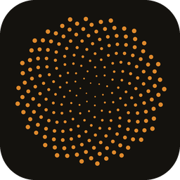
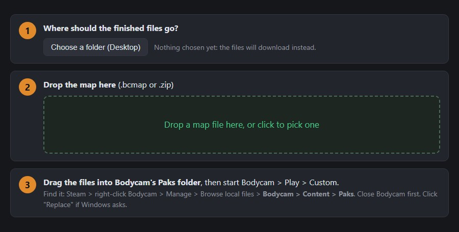
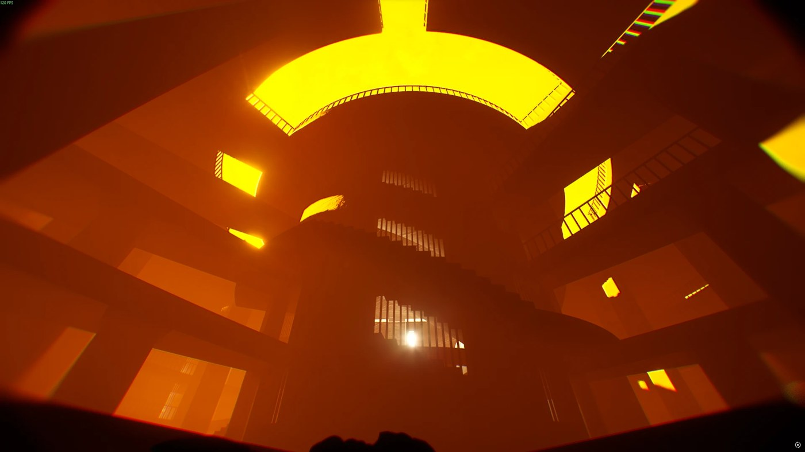
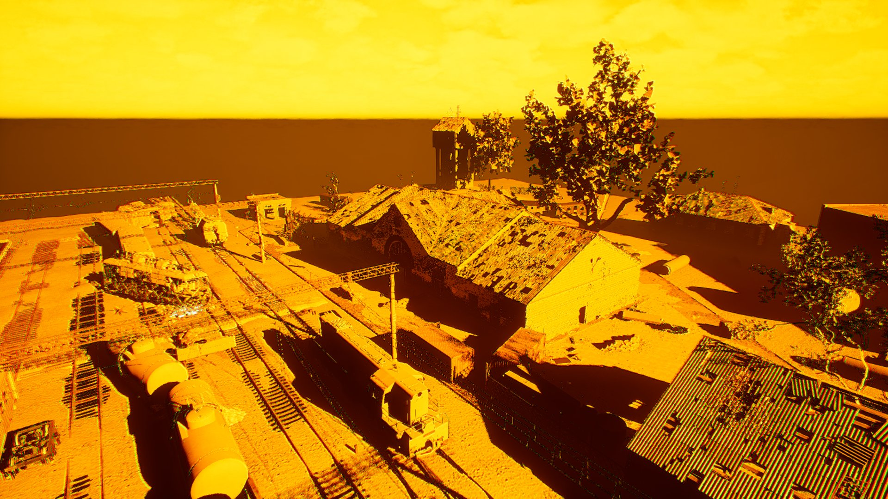

BODYCAM MAP IMPORTER
by MrLovac · add custom maps to Bodycam, each with its own card in Play > Custom
OPEN THE IMPORTER: lovac.github.io/bodycam-map-importer
Runs in your browser. Nothing to install. The link is under the download.

INSTALL A MAP (4 STEPS)
- Close Bodycam and open the importer page (Chrome or Edge: pick a folder for the files once, like your Desktop).
- Drop the map you downloaded (.bcmap or .zip) on the page. It takes up to a minute.
- Drag the files it gives you into
Bodycam\Content\Paks (Steam > right-click Bodycam > Manage > Browse local files). Click "Replace" if asked.
- Bodycam > Play > Custom > pick a mode > the map > host a private match and add bots.
More maps: the page remembers the maps you added, so every new map keeps the others in the menu.
Remove a map: click Remove; the page tells you which files to delete and gives you the new menu file.

Prison V2P, a custom map installed with the app.
SAFE BY DESIGN
✓ Runs in your browser, nothing to install
✓ Nothing uploaded, no telemetry
✓ Never changes the game's own files
✓ Never touches your game folder
✓ No vanilla map replaced
✓ Open source (MIT) on GitHub
MAKE YOUR OWN MAP
Maps are built in Unreal Engine 5.5 with the Bodycam Map Kit: a ready Unreal project with the game's
mode templates and one command that checks your level, builds all 7 modes (Hardpoint, Team Deathmatch,
Deathmatch, Versus, Gun Game, Body Bomb, Wingman), bakes the bot navigation, makes the menu card from your screenshot,
cooks and packs it. Bought or downloaded assets work too, with their own materials and shaders.
- Install Unreal Engine 5.5, Git for Windows and Python 3.
- Build your level, add team spawns and (for Hardpoint) a hardpoint zone.
- Run
newmap.sh MyMap "My Map" photo.png 0.1.0
- Share the .bcmap it makes. Players drop it on the importer page.
The Map Kit download is being cleaned for public release. Full step-by-step guide: the GitHub link under the download.

Work in progress: Yanov Station from STALKER 2 in the kit editor, all textures and the Prison V2P lighting. Private test, never published.